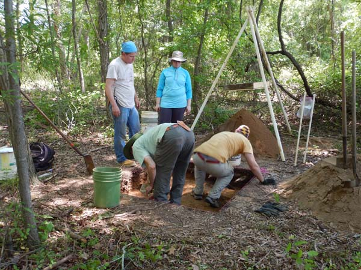
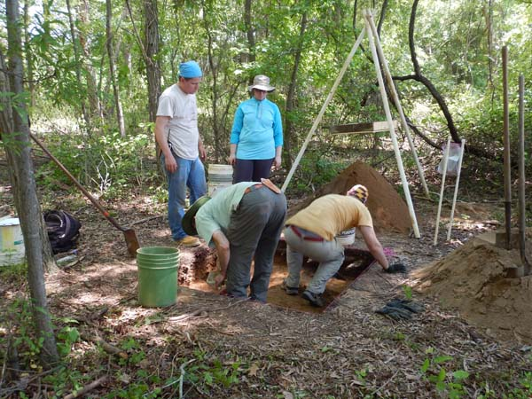
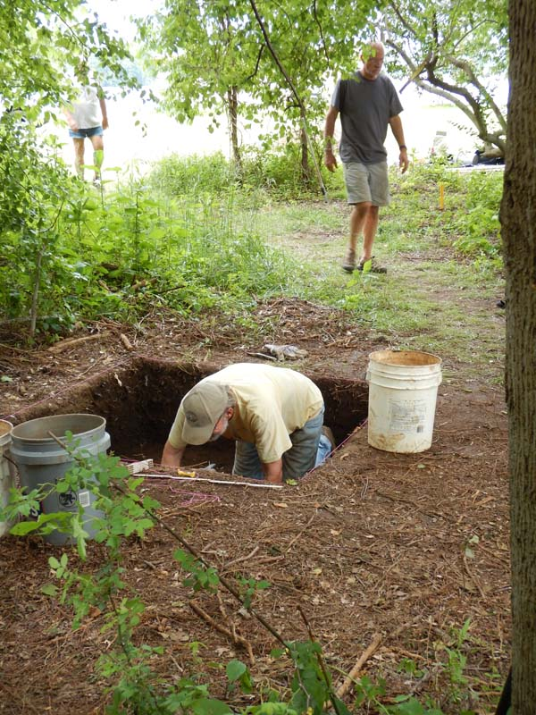
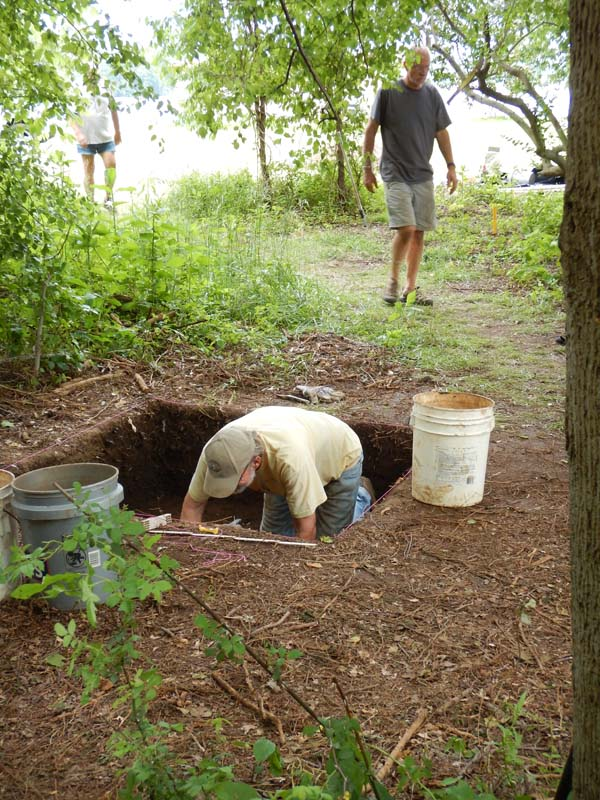

The Spring Symposium will take place on April 8th at the People's Resource Center in Crownsville. Take a look at the Program and plan to join us for a day of archeology.
Membership in the Archeological Society of Maryland, Inc. opens a window to Maryland's past.
ASM sponsors and co-sponsors a variety of archeological activities throughout the year and across the state.
Learn MoreASM has a number of award categories. Each award is presented annually, as appropriate.
ASM has Chapters throughout the state. They usually hold monthly meetings and often conduct local projects.
Learn MoreThis program (CAT program) gives members of ASM an opportunity to obtain recognition for formal and extended training in the techniques and goals of archeology.
This program, begun in 2007, is designed to identify, evaluate and register archeological resources in Maryland.
Need to contact someone in ASM? Here's a list of our current Board of Directors.
ASM is a statewide organization of lay and professional archeologists devoted to the study and conservation of Maryland archeology.


 



 
